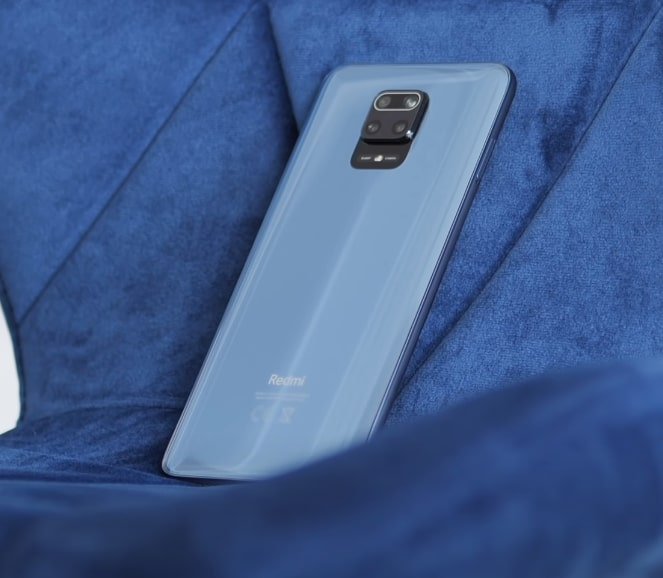

Najbardziej opłacalne telefony na 1 kwartał 2021 roku
Kolejne telefony ,które różnią się cenowo to przedział 200 / 300 złotych pomiędzy jednym jak i drugim telefonem. Uważam ,że jest to fajna opcja ,ale będę miał parę uwag do tego. W dalszym ciągu dobry Redmi Note 8 Pro. Jest to smartfon ,który jest na rynku od prawie 2 lat. Na początku był oferowany w cenie 1200 / 1300 złotych zależnie od wersji. Teraz można go kupić w cenie około 1000 złotych. Telefon jest na prawdę spoko. Nienajgorszej jakości aparat fotograficzny, procesor Helio ,który z czasem okazuje się coraz lepszym CPU, nienajgorszą baterię, świetną jakość wykonania, nienaganny ekran. No i rzecz jasna jeżeli posiadasz ten telefon i zastanawiasz się nad wymianą na Redmi Note 9 Pro to spokojnie ja bym jakoś nie galopował w tę stronę , odczekaj do premiery Redmi Note'ów 10 bo z tego co wyczytałem z przecieków szykuje się naprawdę świetny smartfon. Natomiast jeżeli potrzebujesz telefonu na teraz i masz możliwość dołożenia 2 stówek sugeruję wziąść ten nowszy model czyli Redmi Note 9 Pro
